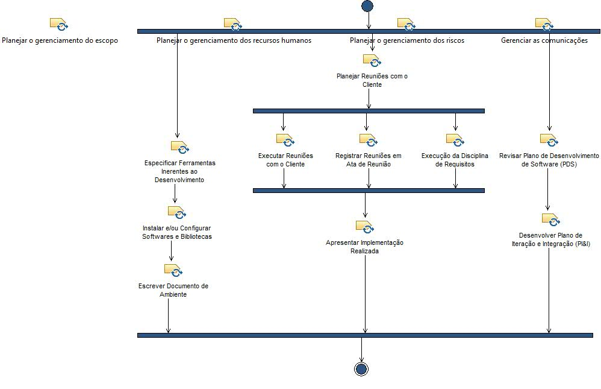
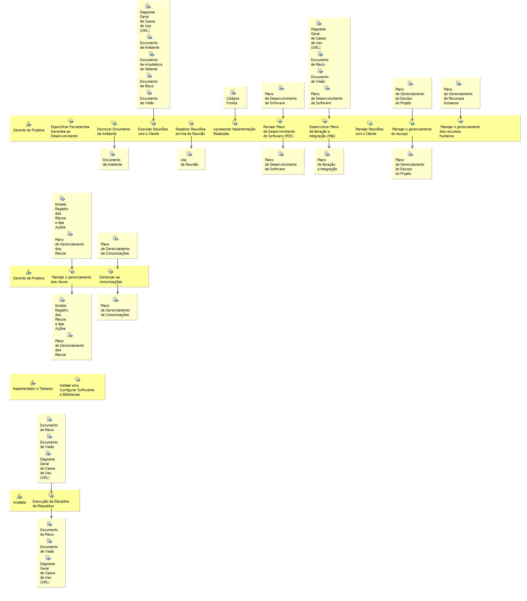

Activity: Gerência de Processo Elaboração
Durante a Elaboração, e futuramente na Construção, o Gerente trabalha para seguir o plano que foi inicialmente traçado. Dessa forma, é possível dizer que ele realiza apenas pequenos ajustes no macro planejamento inicial.
Description
Work Breakdown Structure
Team Allocation
Work Product Usage
Workflow


Work Breakdown